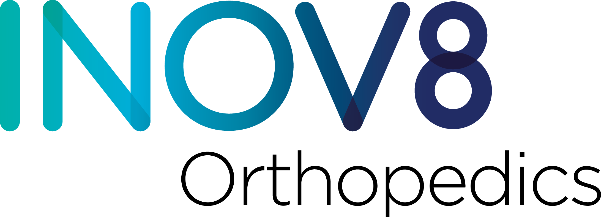

10496 Katy Freeway, Suite 101 · Houston, TX 77043
Phone 346-571-7500 · Fax 713-492-2440
www.inov8ortho.com
Hip & Knee Joint Replacement
Surgical Checklist & Clearance Guide
Patient
Procedure
Surgeon
Location of Surgery
Pre-Op Appt
Surgery Date
Post-Op Appt
HARD STOPS — surgery will be cancelled if these are not met
1 · Tobacco & nicotine free
For at least 4 weeks before and 4 weeks after surgery. The facility may test for cotinine and will cancel if positive. Free help: www.yesquit.org or 877-YES-QUIT.
2 · BMI under 40
A BMI over 40 significantly raises the risk of serious complications during and after surgery. Check yours with the CDC BMI Calculator.
3 · A1c of 7.5 or lower
Elevated blood glucose raises infection risk. If your glucose is over 250 on the morning of surgery, the procedure will be cancelled.
4 · A coach for 72+ hours
A responsible adult (18+) must drive you home and stay with you for at least the first 72 hours. No coach identified = surgery postponed.
5 · Medical clearance obtained
Clearance from your PCP (and specialists if applicable), with labs within 30 days of surgery, must be on file no later than 72 hours before surgery. Form on page 6.
6 · Pre-Admit visit/Zoom completed
Complete the Pre-Admit visit or Zoom call as scheduled by the facility, along with the mandatory Joint Education Class.
7 · ID brought on surgery day
Bring your driver's license or other valid photo ID with you on the day of surgery.
Key contacts
WhoPhoneFor
INOV8 Orthopedics346-571-7500General questions, scheduling, case management
INOV8 Surgical281-800-1233Facility questions
Memorial Hermann Memorial City Medical Center713-242-3056Facility questions
Fax713-492-2298 or
713-492-2440Clearances, FMLA forms ($25 fee per form)
INOV8 Orthopedics · Surgical Checklist & Clearance · Rev {{ revision }}Page 1 of 7
Your Countdown Checklist
Check off each item as you complete it. KLARA texts from our Case Management team (346-571-7500) will remind you of the major milestones.
TODAY — AT THIS APPOINTMENT
Confirm your surgery date, procedure, and facility (page 1), and discuss the hard stops with your care team
Review Medications to Stop (pages 3–4) with your prescribing providers
Sign the Acknowledgements & Consent (page 7) and review DME needs (walker, icing unit — we will contact you via KLARA 1–2 weeks before surgery about the order)
4+ WEEKS BEFORE SURGERY
Schedule medical clearance — required for every patient. Take the Clearance Form (page 6) to your PCP for evaluation and labs (labs within 30 days of surgery). Cardiac clearance is required if you have any prior cardiac condition (valid within 6 months). Other specialists (endocrine, oncology, pulmonology, hematology) as directed.
Obtain your CT scan (if required). The imaging facility will call you to schedule — if no call within a week of this appointment, call us. Your team will confirm which applies:
• Total Hip — OPS 30 days prior or Naviswiss 7 days prior
• Revision Hip — OPS 30 days prior + $250 Corin charge (coringroup.com/hipreview)
• Partial or Total Knee — 14–21 days prior if your surgeon's system requires CT
• Revision Knee — no CT needed
Schedule physical therapy per surgeon order — knee replacements only, starting 7 days after surgery
Schedule dental cleaning (if needed) — no invasive dental work within 21 days before surgery; no cleanings for 6 months after (contact us if emergent)
2–3 WEEKS BEFORE
Stop supplements, vitamins & diet pills — see page 3; review with your PCP / specialist / cardiologist
Fax work disability / FMLA forms to 713-492-2440 at least 14 days before surgery, with $25 payment per form
Need to cancel? Do so at least 14 days before surgery to avoid a $150–$500 fee (see page 7)
1–2 WEEKS BEFORE
Attend the mandatory Joint Education Class and Pre-Admit visit or call. The facility will call or email you to schedule both (Zoom or phone). Missing either will cancel your surgery.
Stop blood thinners as directed by your cardiologist/specialist, and NSAIDs at 1 week — see page 4
1 WEEK BEFORE
Confirm your coach for the day of surgery and at least 72 hours of help at home
Start showering with antibacterial soap (prescribed at the Joint Education Class) and stop shaving your legs
Start increasing fiber and water; take MiraLAX as directed on the bottle (eases discomfort from post-op pain medication)
Discuss with DME coordinator (via KLARA) about preparation of post-surgery items — walker/crutches, icing unit, etc.
NIGHT BEFORE & DAY OF SURGERY
Your arrival time will be confirmed the day before surgery. ASC patients: the surgery center calls you · Dr. Kreuzer at another facility: our scheduler calls you · other providers: the hospital calls you
Post-op medications — we confirm your pharmacy and send them no later than the day before surgery
Do not eat or drink after midnight unless directed otherwise by the facility
Bring your driver's license or ID and report at your designated time with a responsible adult (18+) driver to take you home
INOV8 Orthopedics · 346-571-7500 · Rev {{ revision }}Page 2 of 7
Medications to Stop Before Surgery · 1 of 2
Generic list — always review with your prescribing physician before stopping any medication. These medications can affect bleeding, swelling, blood-clot risk, and anesthesia safety around the time of surgery.
✓ OK TO CONTINUE BEFORE SURGERY
Tylenol · Tramadol · Norco · Gabapentin. Unsure about anything else? Call us with the medication name, dose, schedule, and the condition you take it for — 346-571-7500.
DISCUSS WITH PRESCRIBERHormone Replacement Therapy (HRT)
HRT may increase the risk of blood clots and other surgical complications. Every total joint patient is prescribed post-operative anticoagulation therapy — discuss your regimen with your HRT prescriber before surgery to determine any pre- or post-operative changes.
Examples: birth control pills; male/female hormones including patches and creams. Common: Emcyt, Estraderm, Estratest, Estrace, Estradiol, Estrogen, Ogen, Premarin, Prempro, Testosterone.
STOP 2 WEEKS PRIORVitamins & herbal supplementsOK to restart after surgery
May cause abnormal bleeding. Avoid all multivitamins and supplements, over-the-counter or prescribed, for at least two weeks before surgery.
Common: CoQ10, Dong Quai, Echinacea, Ephedra, Feverfew, Fish Oils (Omega-3), Garlic, Ginkgo biloba, Ginseng, Glucosamine, Chondroitin, Goldenseal, Kava, Licorice, St. John's Wort (all types), Valerian, Vitamin A, Vitamin K, Vitamin C over 2,000 mg daily, Vitamin E over 400 IU daily.
Check with your prescriber before stopping: folic acid, potassium, iron, or B12.
STOP 2 WEEKS PRIORWeight-loss medicationsOK to restart after surgery
Discontinue all diet pills at least 2 weeks before surgery (GLP-1 medications are covered separately below).
Common: Adipex, Lomaira, Phentermine, Qsymia, Ephedra (any type), and all other prescription or over-the-counter diet pills.
STOP 2 WEEKS PRIORGLP-1 medications (semaglutide and similar)
If used for weight loss only: you must stop injections 14 days before surgery — these medications delay stomach emptying, which can interfere with the safety of anesthesia.
Common: Ozempic, Wegovy, Trulicity, Mounjaro, Byetta, Bydureon, Victoza, Adlyxin.
If you are diabetic, do not stop on your own — stopping abruptly can raise your blood sugar. Discuss pausing them for surgery with your prescriber. It is OK to restart after surgery; your prescriber may recommend a specific dosing schedule to do so safely.
INOV8 Orthopedics · 346-571-7500 · Rev {{ revision }}Page 3 of 7
Medications to Stop Before Surgery · 2 of 2
STOP 1 WEEK PRIORAspirin & anti-inflammatories (NSAIDs)Do not restart until advised by your prescriber
NSAIDs may affect clotting and cause abnormal bleeding.
Common: Advil (ibuprofen), Aleve (naproxen), Aspirin*, Baby Aspirin (81 mg), Celebrex, Diclofenac, Feldene, Mobic (meloxicam), Motrin, Nuprin, Orudis, Voltaren.
*Includes all aspirin-containing products: Alka-Seltzer, BC Powder, Bufferin, Disalcid (salsalate), Dolobid (diflunisal), Ecotrin, Excedrin, Fasprin, Goody's Powder, Norgesic, Pepto-Bismol, Percodan.
Check with your prescriber before stopping aspirin if you take daily aspirin therapy to lower the risk of heart attack or stroke.
PRESCRIBER PERMISSION REQUIREDBlood thinners
Pause and restart these only with the express permission and instruction of your prescribing physician. Typical stop schedules:
Prasugrel (Effient), Clopidogrel (Plavix)3–5 days prior
Brilinta (ticagrelor), Warfarin (Coumadin)5 days prior
Apixaban (Eliquis), Dabigatran (Pradaxa), Rivaroxaban (Xarelto)3 days prior
Fondaparinux (Arixtra) 2.5 mg subcutaneous daily36 hours prior
DISCUSS WITH PRESCRIBERAnti-rheumatologic medications
These may or may not need to be stopped — some can interfere with your body's ability to heal, and safe restart timing depends on your dosing schedule. Discuss the stop/restart plan with your prescribing physician.
Examples: Methotrexate, Sulfasalazine, Hydroxychloroquine, Leflunomide, Doxycycline, Apremilast (Otezla), Mycophenolate, Azathioprine, Cyclosporine, Tacrolimus, Rituximab (Rituxan), Belimumab (Benlysta), Infliximab (Remicade), Adalimumab (Humira), Etanercept (Enbrel), Tocilizumab (Actemra), Upadacitinib (Rinvoq).
Unsure about any medication? Contact our office with the medication name, dosage, dosing schedule, and the condition you take it for, and we will help determine whether it should be stopped. Phone 346-571-7500.
INOV8 Orthopedics · 346-571-7500 · Rev {{ revision }}Page 4 of 7
Key Contacts, Billing & FAQs
Who to call
ForContact
Scheduling, authorizations, DME, case management, surgeon bill
INOV8 Orthopedics346-571-7500
Facility bill
Operating room, implants, staff — call the facility where your surgery is scheduled
INOV8 Surgical at Memorial City281-800-1233
Memorial Hermann Memorial City Medical Center713-338-5502
West Houston Medical Center866-888-4439
Anesthesia bill
Call the group that served your facility
Select / Compass Anesthesia (at INOV8 Surgical)281-348-0415 #0
US Anesthesia Partners (at Memorial Hermann / West Houston)833-479-0697
You will receive multiple bills
Expect at least three separate bills — facility, surgeon, and anesthesia — and possibly others (physician assistant or surgical assistant, DME, physical therapy, lab/pathology, radiology). For your best estimate, call your insurance company first with your procedure code — CPT 27447 (knee) or CPT 27130 (hip) — and ask about your deductible, co-insurance, and out-of-pocket maximum; most joint replacements apply to the out-of-pocket maximum. Our office obtains your insurance authorization approximately 7–14 days before surgery.
Frequently asked questions
Scan the code for your procedure with your phone's camera and review the FAQs before surgery — they cover preparation and the post-operative period.
More patient education: www.orthoinfo.org (American Academy of Orthopaedic Surgeons)
Dental care after joint replacement
· No routine dental cleanings for 6 months after surgery. Emergency or urgent dental work is allowed, but you must be pre-medicated with antibiotics.
· For 2 years after surgery, take antibiotic prophylaxis before every dental appointment — bacteria from the mouth can travel through the bloodstream and infect the joint.
· Our office will provide the antibiotic protocol to you and your dentist — call 346-571-7500.
INOV8 Orthopedics · 346-571-7500 · Rev {{ revision }}Page 5 of 7
10496 Katy Freeway, Suite 101 · Houston, TX 77043
Phone 346-571-7500 · www.inov8ortho.com
Surgical Clearance & Requirements — for the clearing physician
Fax all results and your evaluation/clearance to 713-492-2298 (or 713-492-2440)
Due 72 hours before surgery
Dear Doctor: your patient has been scheduled for joint replacement surgery. A medical clearance is required by all facilities to ensure a safe outcome. Clearance received later than 72 hours before surgery may delay the scheduled procedure.
Patient Name
DOB
Surgeon
Surgery Date
Facility
Attention
Type of Surgery
Facility basic testing requirements — anesthesia requires lab work within 30 days of surgery
· CBC with differential
· PT/PTT/INR (if on blood thinner)
· Complete Metabolic Panel
· EKG (within 6 months of surgery)
· HbA1c if diabetic — 7.5 or lower to minimize infection and other risks
· Nicotine test if smoker (may be tested at facility)
These tests meet the minimum requirements for surgical clearance; further testing is at your discretion. You may send your own history and evaluation forms with your assessment. Please provide written confirmation of clearance and any pre/post-surgical care recommendations.
Is the patient cleared for surgery? (circle)YESNO
Patient risk level for surgery (circle)LOWMEDIUMHIGH
Comments and/or recommendations
Please fax to 713-492-2298 or 713-492-2440 · Thank you · Rev {{ revision }}Page 6 of 7
Acknowledgements & Consent
Please initial each section, then sign once at the bottom. You will receive a copy of this page and the full guide.
1 · Outpatient surgery & your coach. Nearly all elective joint replacements at INOV8 Orthopedics are performed on an outpatient basis — at a hospital or an ambulatory surgery center (ASC) — and you will return home the same day. Your coach should plan to be with you for the next 72 hours; recovering at home replaces discharge to a nursing or rehab facility.
2 · ASC financial disclosure. Your surgeon may refer you to INOV8 Surgical at Memorial City LLC, in which Dr. Dharmpal Vansadia, Dr. Stefan Kreuzer, and Dr. Keith Aldrich have a financial ownership interest. We are required by law to disclose this at the time of referral. You have the right to choose another facility where your surgeon has privileges — alternatives are available on request — and you will not be treated differently for asking or choosing another facility. If your surgeon deems it appropriate, you agree to scheduling at INOV8 Surgical at Memorial City LLC.
3 · AAOS Standards of Professionalism disclosure. Cooperative relationships between orthopedic surgeons and industry benefit patient care. As an AAOS member, Dr. Stefan Kreuzer discloses work with: Stryker Orthopedics (former MAKO), Corin, Smith and Nephew, Zimmer Biomet, United Orthopedics, THINK Surgical, Bodycad, Naviswiss, Intellijoint, Conformis, Medtrade, Caira, OrthoSensor, and Argentum Medical (Silverlon).
4 · Durable medical equipment & physical therapy. You will need a walking aid (walker, cane, or crutches) after surgery; a cold-therapy icing unit may also be prescribed. Some items may not be covered by insurance; we will contact you via KLARA, our secure messaging platform, about your specific items closer to surgery. Knee replacement patients must schedule outpatient physical therapy now, to begin 7 days after surgery; PT after hip replacement is discussed at your post-op appointment. You give written permission for INOV8 Orthopedics and its DME suppliers to contact you by telephone concerning the furnishing of Medicare-covered or other items to be rented or purchased for your recovery.
5 · Medical clearance & case-management contact. A thorough evaluation by your primary physician, with lab work, is required within 30 days of surgery; a cardiac evaluation is required if you have a cardiac condition. You consent to phone calls and text reminders (KLARA) from our Clinical Case Management team (346-571-7500) regarding DME, physical therapy, clearances, and other pre/post-operative milestones.
6 · Surgical cancellation policy. Your surgery requires coordination of many providers; please notify us as soon as possible if you must cancel. Cancellation fees — not billable to insurance, payable in full before rescheduling: $150 within 10 business days of surgery · $250 within 5 business days · $500 for same-day cancellation or no-show. Refunds of surgery deposits are issued less the cancellation fee. Except in extenuating circumstances, a surgery rescheduled twice will not be rescheduled again without a deposit. Your surgery may be cancelled by INOV8 Orthopedics or the facility if checklist requirements are not met, including the hard stops on page 1 or medications not stopped per the list. Fees may be waived for unavoidable emergencies, subject to physician and/or management approval.
By signing below, I acknowledge that I have read, understand, and have been provided a copy of each section above, and I agree to the terms of each — including the financial responsibility described in the Surgical Cancellation Policy.
Patient name (please print)
INOV8 Orthopedics · 10496 Katy Freeway, Suite 101, Houston, TX 77043 · 346-571-7500 · Rev {{ revision }}Page 7 of 7